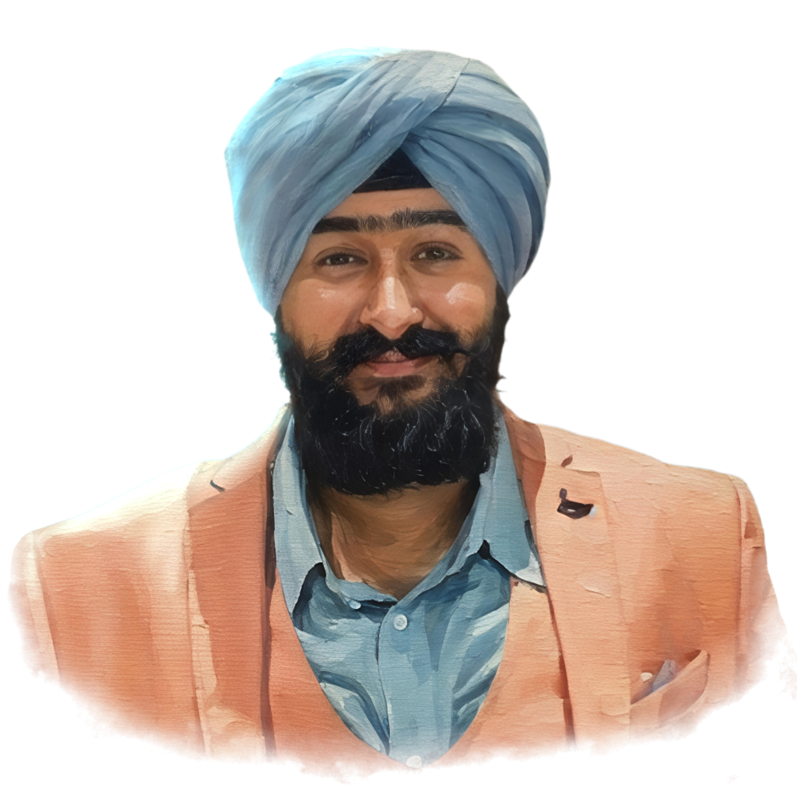

Gurnoor drives the larger vision behind NEVERON, operating with a clear focus on building scalable systems and long-term value. He works at the intersection of strategy and execution, ensuring that ideas are not just ambitious but also structurally sound. His approach is deliberate, grounded, and oriented toward sustained impact across initiatives.
Prakul anchors the operational and strategic backbone of NEVERON, bringing discipline to growth and expansion. He focuses on structuring decisions, optimizing resources, and maintaining clarity as the organization scales. His work reflects a balance of pragmatism and foresight, ensuring that execution remains controlled while ambition continues to expand.